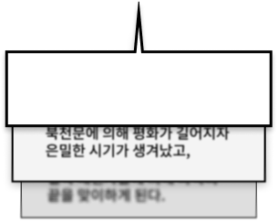
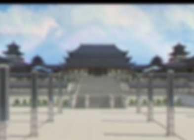
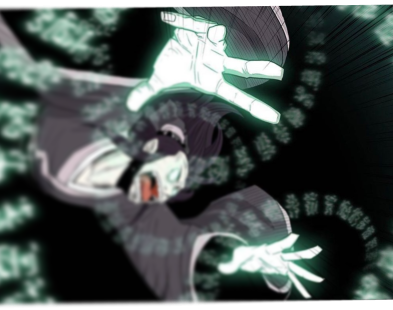
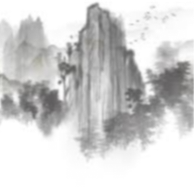
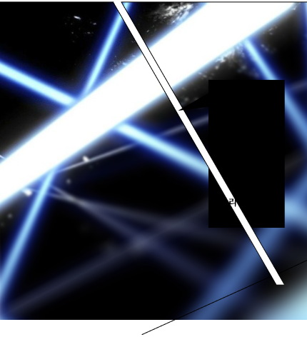

원작
글 그림
우 각
해 민
x
-1-
무협소설의 최강자 우각의 동명 소설
<북검전기>
만화로 새롭게 태어나다
세상을 혼란에 빠뜨린 집단 밀야,
이에 맞서기 위해 만들어진 북천문

-2-
북천문

문주
진무원
배신자들에 의해 파국을 맞이한 북천문
아버지 진관호의 죽음
복수로 갚기 위해 무공을 익힌다.
은한설
誾寒雪
백야마녀의
전인이지만,
이제는
진정한 나로써
진무원과 함께
나아갈거야

난 북천문의
군사이자
삼뇌서생이라
불리우는
서생이지.
세상 모든
진법을
파훼하고
만들어주마.
하진월
주군에게
충성을 맹세
한다.
주군을
방해하는
것을 제거
하고,
주군이 앞으
로 나아갈수
있게
보좌한다.
소무상
-3-

밀야
金剛不壞
야주
등유명
모용율천의 형제
밀야의 숨겨진 야주로
모용율천을 막기 위해 움직이기 시작한다.

청풍마영 남천명
靑風魔影
어두운
하늘에
푸른
바람이 부니
검은
그림자가
세상에
드리워지리라
리
흑익신창 우문천
黑翼神槍
검은 날개가 펼쳐지니 신창이
빛을 발하는구나
백야마녀 소금향
白夜魔女
어두운 밤을
밝히며 마녀가
노래하도다.
-4-
慕容世家
모용세가
무적
모용율천
반로환동 후 지고의 경지에 닿은 존재
아홉하늘을 모두 꺾었으며
모든 일의 원흉이라 할 수 있는 존재
潭秀天
담수천
모용세가의
군사이자
담수천의
애인이지.
하진월
따위에게
내 자리를
빼앗길수는
없어.
서문혜령